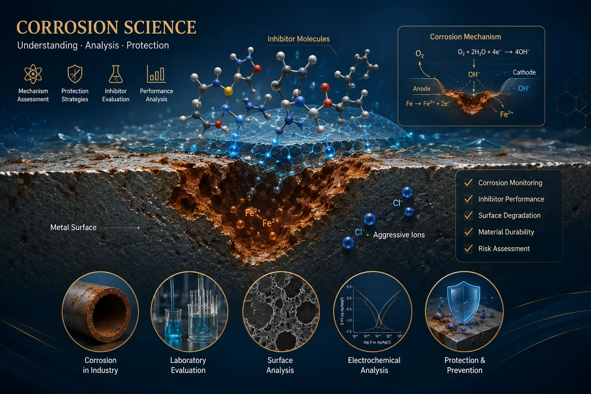

01
Corrosion Science Servicesخدمات علوم التآكل
Scientific assessment of corrosion mechanisms, inhibitor performance, material degradation and protection strategies.تقييم علمي لآليات التآكل وكفاءة المثبطات وتدهور المواد واستراتيجيات الحماية.
- Corrosion mechanism assessmentدراسة وتفسير آليات التآكل
- Evaluation of corrosion inhibitorsتقييم كفاءة مثبطات التآكل
- Weight-loss measurement planning and interpretationتخطيط وتفسير قياسات الفقد في الوزن
- Polarization-curve and adsorption-isotherm analysisتحليل منحنيات الاستقطاب ومتساويات حرارة الامتزاز
- Thermodynamic and kinetic parameter interpretationتفسير المعاملات الديناميكية الحرارية والحركية
- Surface degradation and protection-strategy reviewتقييم تدهور الأسطح ومراجعة استراتيجيات الحماية
- Academic and industrial corrosion consultationاستشارات مشكلات التآكل الأكاديمية والصناعية